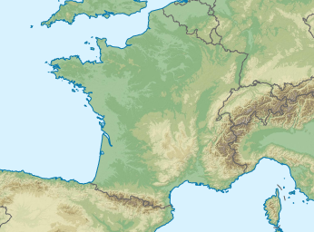

Bulletin Météo-France
Demain: samedi 29
Vigilance orange "orages" lancée sur 25 départements : Charente (16), Charente-Maritime (17), Cher (18), Gironde (33), Landes (40), Deux-Sèvres (79), Vienne (86), ainsi que Bourgogne Franche-Comté et Grand-Est. Fort épisode pluvio-orageux sur la majeure partie du pays.
Lire le bulletin